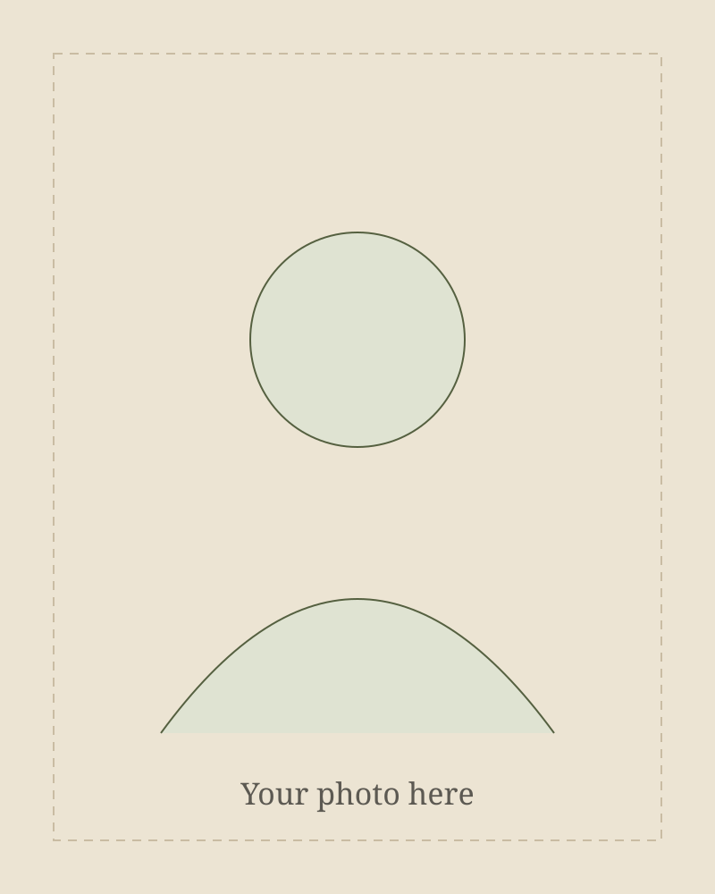

Health science, explained with care.
The Movement Mind is an independent health education publication. It exists to help everyday readers understand their bodies, brains, nutrition and health through clear, practical, evidence-informed writing.
Why this publication exists
Health information is everywhere, but much of it is either too technical to be useful or too simplified to be trustworthy. Social media rewards certainty, fear and quick fixes. Real science is usually more nuanced — and often more reassuring.
The Movement Mind aims to sit in between: translating complicated research into accessible explanations, without exaggerating findings, hiding uncertainty or selling miracle solutions.
This is not a clinic, a store or a fitness brand. It is a place to read, think and understand.

[Your Name]
[Your Name] is a physiotherapist with a master’s degree in advanced physiotherapy and a musculoskeletal focus. Their foundation is in physiotherapy and movement science — how bodies move, load, adapt, hurt and recover.
That clinical grounding led to a much wider curiosity: about the brain and nervous system, nutrition and metabolic health, women’s health, psychology and the habits that shape long-term wellbeing. The Movement Mind is where those interests come together.
[Optional: add a sentence about your clinical experience, where you trained, or what you’re currently focused on. Only include details you’re happy to make public.]
What guides the writing
These principles shape every article.
- Rooted in movement scienceA physiotherapy perspective: understanding the body as adaptable, capable and responsive to how it is used.
- Curious beyond one disciplineHealth doesn’t respect academic boundaries. Neuroscience, nutrition, psychology and behaviour all belong in the conversation.
- Evidence-informed, not evidence-decoratedResearch is used to understand questions honestly — not to dress up a conclusion that was already decided.
- Clarity without fearNo fearmongering, miracle cures or exaggerated promises. Calm explanations help people make better decisions.
- Honest about uncertaintyEstablished evidence, emerging research and hypotheses are clearly distinguished, so readers know how confident to be.
What this is not
- A source of personal medical advice
- A diagnostic or treatment service
- A place for sponsored product promotion
- A substitute for seeing a qualified professional